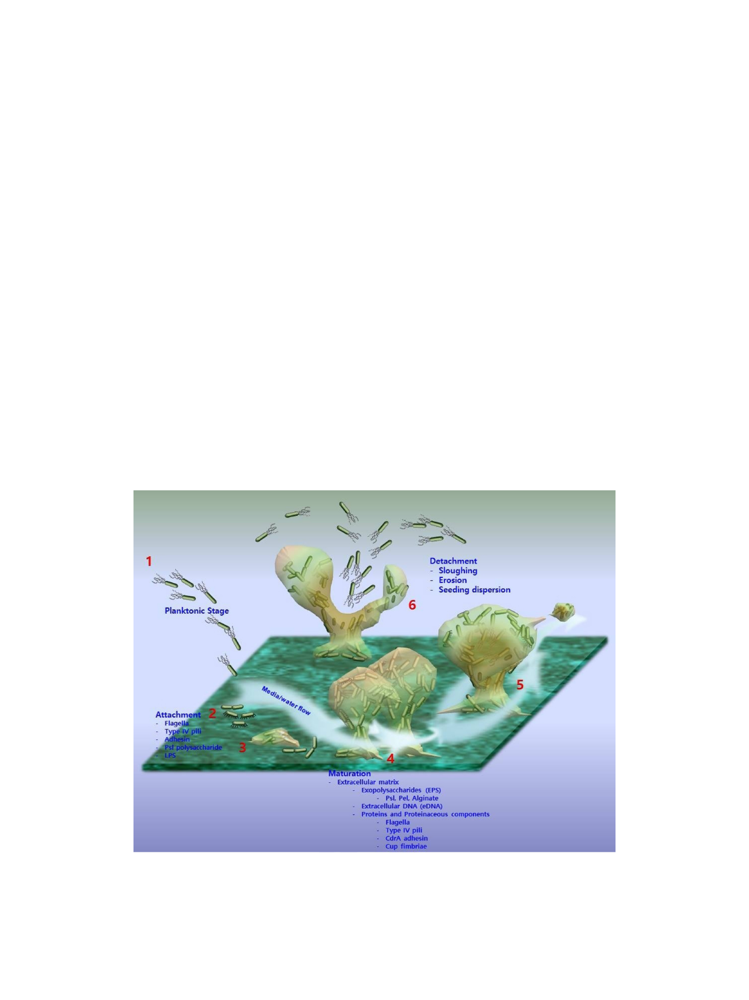

1054 Lee and Yoon
produced numerous studies for the diagnosis and
management of many devastating infectious diseases, such
as tuberculosis, cholera, and diphtheria. Because of these
important contributions of planktonic pure culture techniques
in the health of the human race, these techniques are
essential and have been the gold standard for the study of
microbes for several decades. However, microbiologists
still have continuously faced difficulties in eradicating
bacterial infections completely or growing many bacteria in
single-species planktonic cultures.
Microbiologists started to realize that it was inadequate
to study bacteria in pure planktonic culture in order to
understand their natural lifestyle and interactions. The
differences between single-species planktonic cultured
bacteria and the same bacteria in sessile and mixed-species
cultures have been characterized owing to the development
of microscopy technologies. Most bacteria have completely
different phenotypes and physiological characteristics
when grown in pure planktonic conditions compared with
mixed-species sessile conditions.
Since the early 1900s, many descriptions of sessile
cultures were made for surface-associated bacteria, marine
bacteria attachment on glass surfaces, and many others [1,
2]. The term biofilm had been unofficially used among
scientists, but the first official introduction of the term was
in the Microbial Ecology journal in 1975 [3]. Moreover, the
ubiquitous characteristics of biofilms were proposed in the
first quantitative examination of bacteria in specific
ecosystems by J. W. Costerton and his colleagues in 1978
[4]. They discovered an extensively large number of
bacteria in the biofilms from the surfaces of rocks from
alpine lakes and streams in Montana, but found a very
small number of planktonic bacteria, and the data were
confirmed in different locations [4]. Based on their data,
they confirmed that biofilms are a major form of bacterial
existence in nature, and the universality of biofilms was
suggested and confirmed not only in environmental
systems, but also in the industrial and medical fields [5].
Early in biofilm research, there was a limitation in
biofilm observation due to deformation and dehydration
during the preparation of samples for bright field or
electron microscopy. Thus, biofilms were thought to be a
uniform layer of bacteria that were covered in slime.
However, in the late 20th century, biofilm observation
using confocal laser scanning microscopy produced a
breakthrough in biofilm research through the discovery of
Fig. 1. Diagrammatic representation of the developmental stages of P. aeruginosa biofilm.
The diagram presents (1) the planktonic stage, (2) attachment of bacteria to a surface, (3) production of the extracellular matrix, (4) maturation of
biofilm structures, (5) spatial differentiation, and (6) biofilm dispersal.
J. Microbiol. Biotechnol.